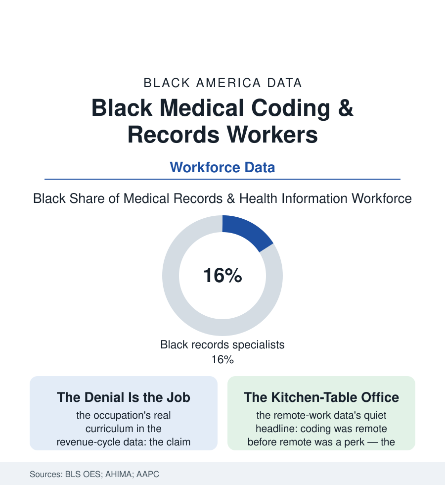

Black Employment
The Code Keepers: Black Workers in Medical Records, Coding, and Billing
Every diagnosis in America becomes a code, and every code a bill — translated by a back-office workforce of half a million, substantially Black and female. The code keepers' file.

Behind every clinical encounter in this atlas stands a second, invisible encounter: the translation of care into codes — the diagnosis numbered, the procedure priced, the claim argued with the insurer's own algorithms. The workforce that performs this translation numbers in the hundreds of thousands, and it is substantially Black and overwhelmingly female. This article reads the code keepers' file.
The Language of the Ledger
The occupation's substance is a bilingualism the labor data rarely honor: fluency in medicine's clinical tongue and in the payer's administrative one, the coder reading the physician's note the way the interpreter reads a testimony — for what was meant, what was documented, and what the rules allow to be said — the gap between those three being the revenue cycle's whole battlefield (the denied claim's appeal, the audit's defense, the documentation-improvement rounds in which the coder teaches the doctor to write what the coder can bill). The certification shelf stratifies the workforce with unusual legibility (the RHIT and RHIA degrees of the health-information profession, the CPC of the outpatient coders, the specialty credentials stacking into wage steps the BLS data can see) and the profession's Black membership — the AHIMA and AAPC counts placing it in the mid-teens of percent and climbing through the community-college pipelines — makes the occupation one of the health system's most integrated back offices, its ladders (coder to auditor to compliance to the revenue cycle's management) among the few in the hospital that do not pass through a clinical license. The work's setting wrote the file's modern chapter early: coding went home before the pandemic made it a headline — the credentialed remote workforce, its kitchen tables in every city of this atlas, its productivity monitored by the keystroke in the new management literature — a flexibility the caregivers of the time file spend like currency, and a dispersion that dissolves the occupation's collective visibility exactly as its numbers grow.
The history is shorter than the occupation feels: the code sets themselves are young — the diagnosis codes standardized nationally within living memory, the great ICD-10 conversion of the last decade an occupational moonshot the workforce remembers as its finest hour and its longest year — and the profession's Black pioneers of that era, the hospital records directors who built the departments the community colleges now feed, are retiring with the paper charts they once ruled. Their successors inherit the cloud version of the same kingdom.
The Algorithm Arrives
The automation question hangs over this file as over no other in the section, because the work is, in form, exactly what software eats: structured text in, codes out. The computer-assisted coding systems are already the occupation's daily tools in the vendor data, and the profession's own literature has spent a decade repricing its human claim — from production to judgment: the ambiguous operative note, the conflicting documentation, the audit's narrative defense, the new code sets' annual thousands of changes absorbed and taught. The early employment data side, cautiously, with the augmenters (the occupation's projected growth in the BLS outlook running above average even as the tools spread — the aging population's encounter volume out-producing the software's appetite, the coders' role migrating up the exception queue), while the equity rows of the transition are this file's to watch: whose jobs are the automatable production tier (the entry coders, disproportionately the community-college graduates of the last decade's pipeline) and whose are the judgment tier it feeds — the ladder's bottom rung, here as in the bank file and the claims file, being precisely where this population's newest entrants stand. The profession's associations answer with the credential stack and the audit specialty; the data will grade the answer. What is not in doubt is the ledger's permanence: American medicine will be coded and billed by someone, or something, for as long as it is paid by the claim — and the workforce that taught itself the system's secret language, at kitchen tables in the neighborhoods the care itself underserves, has earned its seat at whichever table remains.
Reading the Coding Data
The code keepers' file is the employment section's back office entire: invisible, essential, credentialed in private, and standing first in line for the algorithm's audit of everyone. The BLS counts the occupation under records specialists. The hospitals feel its absence in the only language they never mistranslate — the days in accounts receivable.
More in Black Employment
The Black Unemployment Rate: The Two-to-One Pattern
Black unemployment runs at roughly twice the White rate — 5.5 percent against 3.3 percent in annual averages — a ratio stable across five decades of federal data. How it is measured and why it persists.
Black Median Weekly Earnings: The 80-Cent Ratio
Black full-time workers earn a median of about $900 a week — roughly 80 cents for every dollar White workers earn. The BLS earnings data by group, gender, and occupation.
Black Labor Force Participation: Working at National Rates
Black labor force participation runs at roughly the national rate — and Black women participate at higher rates than White women. The BLS participation data.
Source: U.S. Bureau of Labor Statistics Occupational Employment Statistics; American Health Information Management Association workforce data; AAPC membership research.